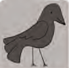

There are around 10.000 living species of birds that inhabit different ecosystems from the artic to the antartic. many species undertake long distance annual migrations, and many more perfom shoter irregular journeys.There are around 10.000 living species of birds that inhabit different ecosystems from the artic to the antartic. many species undertake long distance annual migrations, and many more perfom shoter irregular journeys.
There are around 10.000 living species of birds that inhabit different ecosystems from the artic to the antartic. many species undertake long distance annual migrations, and many more perfom shoter irregular journeys.